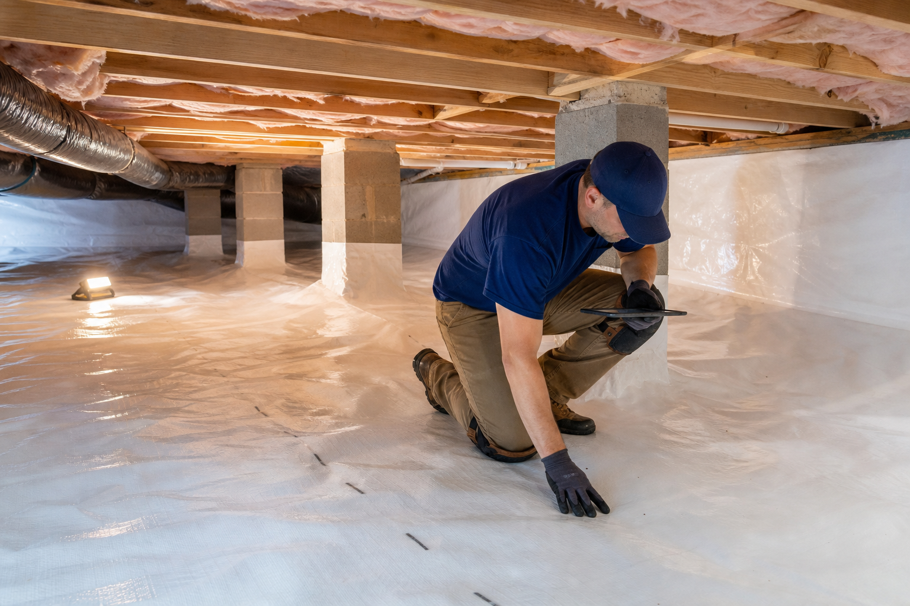

Why humidity matters
Warm humid air can enter through vents and gaps during long cooling seasons. When that air meets cooler ducts, masonry, floor framing, or insulation, condensation and elevated humidity can become a recurring crawl space problem.
Local moisture context
Charlotte crawl spaces are shaped by local soil, weather, grading, tree cover, and home age. That local context matters when choosing vapor barrier, drainage, insulation, and humidity-control details.
Crawl Space Article
This article explains one part of the crawl space decision: the condition, material, local factor, or service step a Charlotte homeowner should understand before choosing a scope.
Article focus
Clay-heavy soil can hold moisture around the foundation after rain. If grading, downspouts, or low crawl space areas keep water near the home, the crawl space may stay damp even after the weather clears.

Warm humid air can enter through vents and gaps during long cooling seasons. When that air meets cooler ducts, masonry, floor framing, or insulation, condensation and elevated humidity can become a recurring crawl space problem.
Catawba Crawlspace Co. looks at exposed soil, access height, shaded foundation walls, drainage paths, service clearances, and nearby weather patterns before recommending liner coverage, vent sealing, sump pump planning, insulation changes, or dehumidifier placement.
What homeowners should know
These checks keep the project focused on a durable moisture-control system instead of a surface-level liner installation.
This detail helps connect the visible crawl space condition to a practical encapsulation scope and a clear finished result.
This detail helps connect the visible crawl space condition to a practical encapsulation scope and a clear finished result.
This detail helps connect the visible crawl space condition to a practical encapsulation scope and a clear finished result.
This detail helps connect the visible crawl space condition to a practical encapsulation scope and a clear finished result.
This detail helps connect the visible crawl space condition to a practical encapsulation scope and a clear finished result.
Water movement should be understood before the crawl space is closed, because bulk water and vapor need different controls.
Read next
The strongest crawlspace decision usually combines service scope, problem diagnosis, cost context, and local moisture patterns.
Encapsulation performs better when bulk water is understood first. Drainage, waterproofing support, grading, downspouts, sump pumps, and low-point planning protect the liner and the floor system above it.
Moisture control is the reason encapsulation works. The system has to manage ground vapor, outside air, bulk water, humidity, insulation performance, and the service needs of the home above.
A wet crawl space is a warning sign, not just an inconvenience. The right fix depends on whether the moisture is coming from soil vapor, humid air, bulk water, foundation seepage, or drainage failures.
High humidity can keep a crawl space unhealthy even without obvious puddles. Charlotte weather makes humidity control one of the most important parts of encapsulation.
Encapsulation is worth considering when the crawl space is actively affecting moisture control, comfort, air quality, energy use, maintenance access, or the long-term condition of the floor system.
Start here
Catawba Crawlspace Co. will review the crawlspace, explain the moisture-control path, and provide a clear next step for homes in Charlotte, Gaston County, and Mecklenburg County.
Phone: 704-276-6624
Office Address: 3800 Medallion Dr, Charlotte, NC 28205